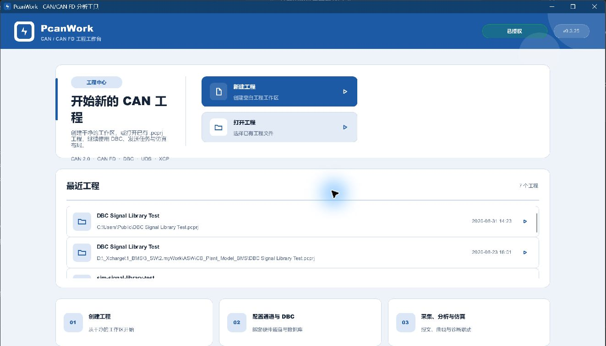

RELEASE NOTES · 2026-09-05
PcanWork v0.4.5
本版本聚焦长时间运行和现场问题定位：降低高负载接收链路的持续积压，提供可控的 Trace 显示深度，并统一 CAN、Modbus 与串口工具的交互和视觉语言。

性能与数据链路
- 接收事件使用独立 10ms 调度，每轮设置处理预算，界面仍按 100ms 节奏刷新。
- 批量接收帧整批提交记录队列，减少逐帧队列开销；启用触发器时仍保留精确的逐帧触发边界。
- CAN 字节显示复用十六进制文本，并减少 64 字节 Trace 行的重复分配。
- 无硬件合成压力测试中，四阶段共 920,750 帧完成处理和 BLF 写入，输入与记录队列零拒收；该结果不等同于真实硬件和完整绘制性能保证。
Trace、筛选与诊断
- 实时 Trace 显示范围可选 300、750 或 1500 行，默认 300；采集缓存和记录不受显示范围影响。
- 关闭自动滚动后冻结当前表格便于查看，筛选、排序和清空仍可操作，恢复自动滚动后显示最新数据。
- 筛选条件增加语法说明、待应用/已生效状态与非法 ID/Data 校验，方向等条件统一在点击应用后生效。
- 运行诊断从状态栏长文本移入详情窗口，状态栏保留连接、计数、帧速率和负载等关键信息。
界面与工程维护
- 发送窗口、帮助、Modbus 与串口工具完善窄窗口布局，连接参数可折叠，表格通过滚动保持完整列可达。
- CAN、Modbus、Serial 共享按钮状态、紧凑/舒适密度、弹窗边距、键盘焦点与中英文交互约定。
- 关闭、排序和通道下拉箭头改用 SVG，减少字体字形差异，并修正图标垂直对齐。
- 主程序、CAN 后端和 Modbus 后端按职责拆分模块，保留既有公共入口，降低后续维护成本。
验证结果
Release 安装包已生成并完成完整性核验
- PcanWork、Serial Tool、Modbus Tools 与安装包均报告版本 0.4.5
- 构建配置：release-fast-msvc
- 安装包当前未进行代码签名
安装包完整性
- 文件：
PcanWork-Setup-0.4.5.exe - 大小：36,968,500 字节
- SHA-256：
CC99C09B0F2C37BFDB4ED54FD4FAF97B24E6B94A9D922F20151C80F2963A4324 - 构建源提交：
e1909ab8a02d7dfb780a4a9790a17a377b1e985d
构建报告记录工作树包含未提交改动，因此安装包应以版本号、文件大小和 SHA-256 共同识别。